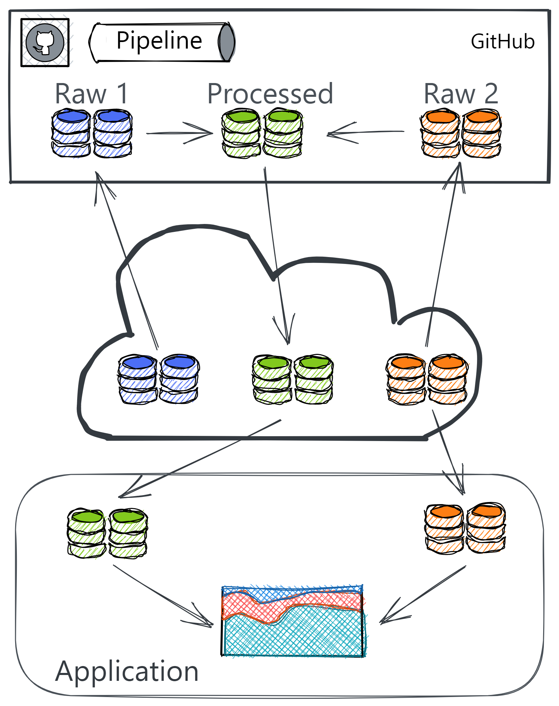
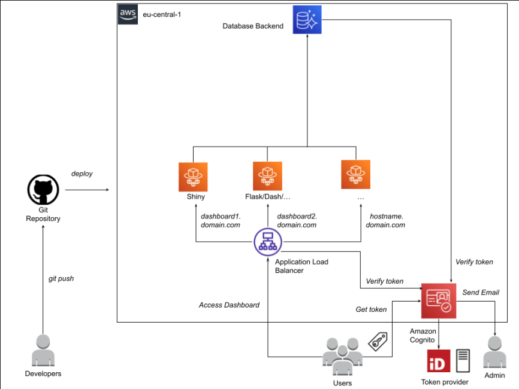

Production
Misc
- Resources
Docker
Misc
- Packages
- {deps} (article)
- Lightweight method that installs packages via a DESCRIPTION json file
- Blend between package and renv approaches to dependency management
- Project scripts contain roxygen-like, decorator code about packages and those are used to build the DESCRIPTION json file
- Image size should be similar to the “deps/DESCRIPTION” method above
- Lightweight method that installs packages via a DESCRIPTION json file
- {deps} (article)
Images
- Images have a 2GB limit
- Base Image Build Times
.png)
- Smaller images take longer to load because all the packages/libraries have to be compiled
- rstudio/base, rocker/shiny, rocker/r-ubuntu use binary packages
- rocker/r-bspm and eddelbuettel/r2u uses binary packages and apt-get
- Order of Image Layers
.png)
- Order is bottom to top when writing your dockerfile. (see example below)
- Important for the bottom layers to be things that you might change most often. This way you don’t have to reinstall R everytime you change something in your app code.
Dockerfiles
Example 1
From rocker/r-base:4.0.4 RUN apt-get update && apt-get install -y \ --no-install-recommneds \ make libssl-dev libxml2-dev \ && rm -rf /var/lib/apt/lists/* COPY Rprofile.site /etc/R RUN install.r shiny ggplot2 htmltools plotly RUN addgroup --system app && adduser --system --ingroup app app WORKDIR /home/app COPY app . RUN chown app:app -R /home/app USER app EXPOSE 3838 CMD ["R", "-e", "shiny::runApp('/home/app', port = 3838, host = '0.0.0.0')"]Example 2 (source)
# Use the official R base image FROM rocker/r-ver:4.3.1 # Install system dependencies (if needed) RUN apt-get update && apt-get install -y \ libcurl4-openssl-dev \ libssl-dev \ libxml2-dev \ && rm -rf /var/lib/apt/lists/* # Set the working directory WORKDIR /usr/src/app # Copy your project files COPY . . # Install R dependencies RUN Rscript -e "install.packages('renv')" RUN Rscript -e "renv::restore()" # Define the entry point CMD ["Rscript", "app.R"]
Dependencies
Methods (article)
# Explicit RUN install.r shiny ggplot2 htmltools plotly # DESCRIPTION file RUN install.r remotes COPY DESCRIPTION . RUN Rscript -e "remotes::install_deps()" # renv package RUN install.r remotes renv COPY ./renv.lock . RUN Rscript -e "options(renv.consent=TRUE); renv::restore(lockfiile='/home/app/renv.lock')"littler::install.r({littler} is installed on all Rocker images)
Image Size Comparison
REPOSITORY TAG SIZE analythium/covidapp-shiny renv 1.7GB analythium/covidapp-shiny deps 1.18GB analythium/covidapp-shiny basic 1.24GB- basic Image (aka “explicit” method): 105 packages installed
- deps Image (aka “DESCRIPTION” method): Has remotes added on top of these;
remotes::install_deps()to install packages from the DESCRIPTION file - renv Image: Has remotes, renv and BH as extras.
- BH seems to be responsible for the size difference, this package provides Boost C++ header files.
- Your app will probably work perfectly fine without BH.
- You can use
renv::remove("BH")to remove BH from the project or use the “custom” model and list all the packages to be added to the lockfile
Security
Example: Dockerfile
RUN addgroup --system app && adduser --system --ingroup app app WORKDIR /home/app COPY app . RUN chown app:app -R /home/app USER app- Best to create user groups and not run app as a root sudo
chown, an abbreviation of change owner, is used on Unix and Unix-like operating systems to change the owner of file system files, directories. Unprivileged users who wish to change the group membership of a file that they own may use chgrp
Compose
Example: With postgres and shiny server (source)
services: postgres: # a name, e.g., db_container is # instrumental to be # called as host from the shiny app container_name: db_container build: ./postgres restart: always environment: - POSTGRES_USER=postgres - POSTGRES_PASSWORD=postgres # This port mapping is only necessary # to connect from the host, # not to let containers talk to each other. ports: - "5432:5432" volumes: - "./pgdata:/var/lib/postgresql/data" shiny: container_name: shiny depends_on: - postgres build: ./shiny volumes: - "./shiny-logs:/var/log/shiny-server" - "./shiny-home:/srv/shiny-server" ports: - "3838:3838"
CI/CD
.png)
- Use github action for docker caching which builds the image and pushes your image to Docker Hub
- Then your compute instance (PaaS) pulls the image from that registry
Data Strategies
- Do as little processing as possible in the app
- Bundle datasets alongside the source code, such that wherever the app is deployed, those datasets are available.
- Drawback: data would need to be kept in version control along with your source code, and a new deployment of the app would be required whenever the data is updated.
- For frequently updated datasets, this is impractical, but may be valuable if those datasets are unlikely to change during the lifetime of a project.
- Drawback: data would need to be kept in version control along with your source code, and a new deployment of the app would be required whenever the data is updated.
- Keep data in cloud storage
- Allows collaborators to upload new data on an ad-hoc basis without touching the app itself. The app would then download data from the cloud for presentation during each user session
- Better for frequently updated datasets
- Optimization (loading in secs instead of mins)
- Use parquet file format
- Caching the data for the app’s landing page or use asynchronous computing to initiate downloading the data while presenting a less data-intensive landing page
- Pipeline
- Partition data:
- Raw data that is not computationally expensive or needs no processing
- Processed data that is more computationally expensive to process.
- The data processing pipeline is outside of the app. (e.g. GitHub Actions workflow)
- Data storage and app server should be in the same region to reduce latency
- Partition data:
- Create Pipeline Triggers
- When new raw data is uploaded, then data gets processed and into the app in a timely manner.
- When the source code for the app or the data processing pipeline change, the data processing pipeline should run afresh.
- If changes to the structure of the raw dataset mean that the data processing pipeline produces malformed processed data, there should be a way to log that.
- {pins}
Also see Databases, Engineering >> Misc >> {pins}
Everytime the pin is updated,
pin_reactive_readalso updates the data within the shiny app- You can also set a fixed update time within the function
Example: How to use pins + Shiny for ever-changing data
board <- board_connect(server = Sys.getenv("CONNECT_SERVER"), key = Sys.getenv("CONNECT_API_KEY")) name = "isabella.velasquez/shiny-calendar-pin" server <- function(input, output, session) { reactive_pin <- pins::pin_reactive_read(name = name, board = board) r <- reactiveValues(all_data = NULL, filtered_data = NULL) observe({ req(reactive_pin()) all_results <- reactive_pin() |> as.data.frame() |> filter(!is.na(title) & !is.na(duedate)) |> rowid_to_column("id") r$all_data <- all_results r$filtered_data <- all_results }) }
{kind=link}
Optimization
- Misc
- Resources
- Offload Shiny’s Workload: COVID-19 processing for the WHO/Europe
- Overview of how they reduced loading times of a World Health Organization app from minutes to seconds
- Shiny docs: caching and async programming
- Chapter 15 of Engineering Production-Grade Shiny Apps covers, in detail, some common performance pitfalls and how to solve them.
- Offload Shiny’s Workload: COVID-19 processing for the WHO/Europe
- Resources
- Reduce the amount of computation occuring inside the app (by caching plots and tables, or by precomputing your data),
- Analyze whether the app could be using too much reactivity or regenerating UI elements unnecessarily
Deployment
- AWS
- Notes from
- Features
- Secure, end-to-end encrypted (SSL, TLS) access to dashboards.
- Secure authentication through E-mail and Single-Sign-On (SSO).
- Horizontal scalability of dashboards according to usage, fail-safe.
- Easy adaptability by analysts through automation and continuous integration (CI/CD).
- Easy maintenance and extensibility for system operators.
- Components
- Application Load Balancer (ALB) to handle secure end-to-end (SSL) encrypted access to the dashboards based on different host names (host-based-routing).
- AWS Cognito for user authentication based on E-mail and SSO through Ping Federate.
- AWS Fargate for horizontal scalability, fail-safe operations and easy maintenance.
- AWS Codepipeline and Codebuild for automated build of dashboard Docker containers.
- Extensive usage of managed services requiring low maintenance (Fargate, Cognito, ALB) and Amazon Cloud Development Kit (CDK) to define and manage infrastructure-as-code managed in Git and deployed via Code Pipelines.
{kind=link}
Security
Misc
- Also see Docker >> Security
- {shinyauthr}
- for user authentication. App doesn’t get rendered until user is authenticated
{backendlessr}
remotes::install_gitlab("rresults/backendlessr")- Provides user registration, login, logout, profiles
- Some small amounts of data can be sent to backendless (not log files)
- There are some user counting functions in the package for keeping track of API calls (I think)
- Some small amounts of data can be sent to backendless (not log files)
- API wrapper for backendless platform
- Free for up to 60 API calls per minute 1M API calls per month
- If you need more, use invite code p6tvk3 when you create a new app to get 25% off for the first 6 months
- Demo login:
backendlessr::shiny_demo_login(http://0.0.0.0:3838)
.png)
- Clicking the “Register” button calls the backendless API
- Displays “Successful” if user registration worked
- Steps
Register at backendless and get a free account
Register you app
.png)
- Get the Application ID and API key
Add ID and key to .Renviron (for testing)
BACKENDLESS_APPID = "<app id>" BACKENDLESS_KEY = "<api_key>"Add ID and key to Docker Swarm secrets (for production)
Install package and run functions in your shiny app
ExampleBasic
ui <- fluidPage( titlePanel("User access demo"), actionLink("open login", "Log in"), hidden(actionLink("logout", "Log out")), hidden(moduleLoginUserUI("loginmain")), hidden(plotOutput("demoPlot", height = "300px")) #... ) server <- function(input, output, session) { # ... ObserveEvent( input$open_login, {showElement("loginmain-login-form")} #... ) }- App listens for
actionLinkopen_login which is the user login into the app - Then
showElementunhides all the hidden things in the ui (e.g. logout, loginmain module, demoPlot) andactionLinkLog in becomes hidden (I think)
- App listens for
- Bunch of user credential functions available but here’s a list that currently aren’t:
- Social Network logins (e.g. to allow a user to use their Facebook account to log in to our service);
- Async calls;
- Geolocation;
- Logging (send log messages of your app to Backendless platform).
- Enhanced Security
- User password reset